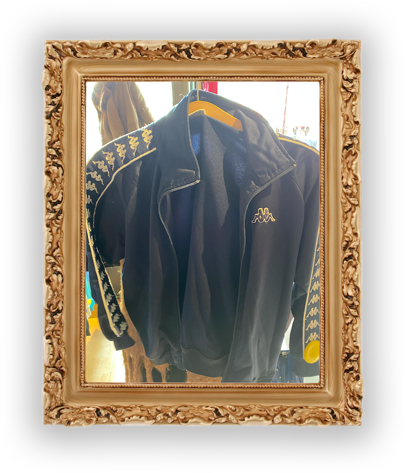
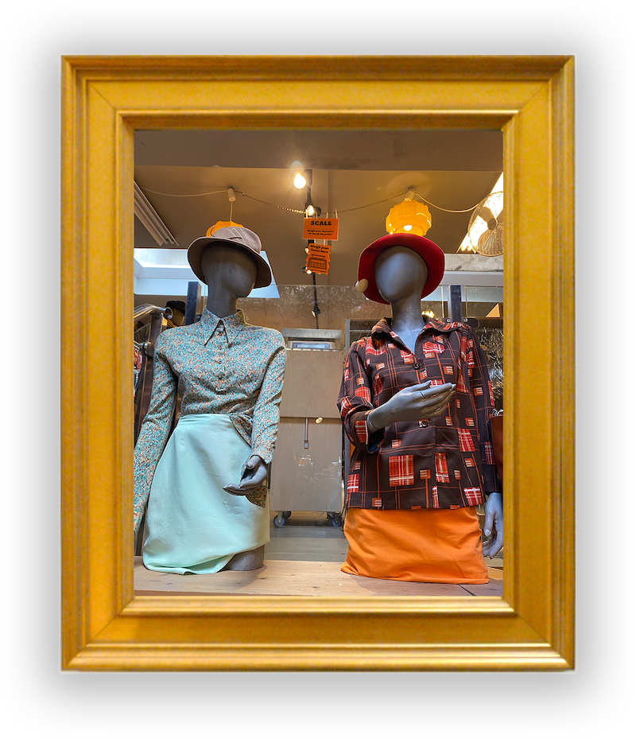
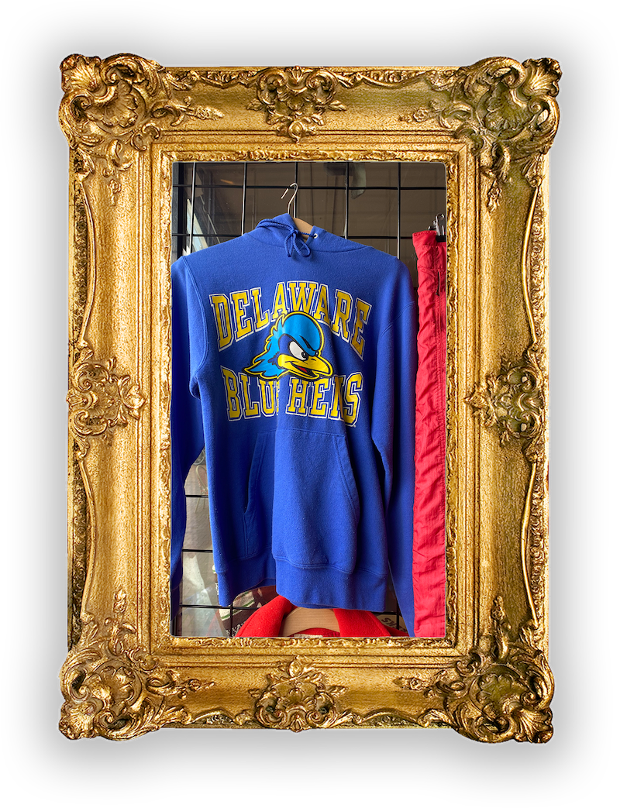
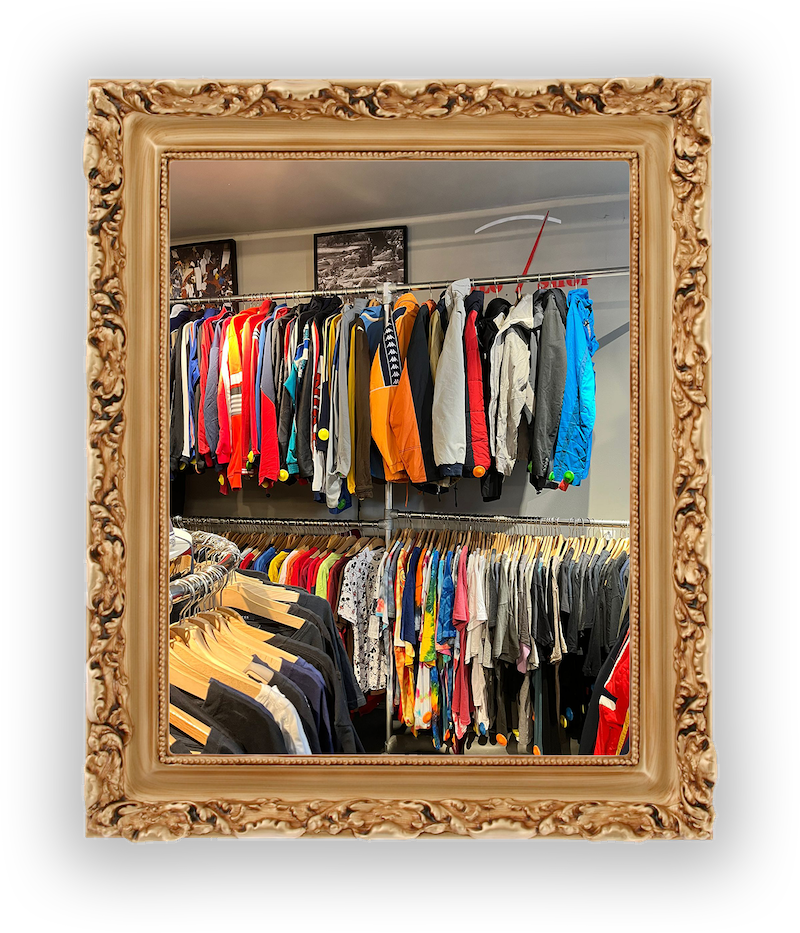

Waarom Kilo?
Thriften is een trend geworden, helaas hebben tweedehands winkels deze trend ook opgemerkt. Hierom schieten prijzen de lucht in en kan jij mooie merken niet meer goedkoop thriften. Sommige vintage winkels hanteren echter een kilo systeem, waar elke item gewogen wordt en aan de hand hiervan geprijsd wordt.
Markups
Tweedehands winkels zouden moeten overwegen om per kilo te rekenen om verschillende redenen. Ten eerste, dit model zorgt voor een eerlijke en transparante prijsstructuur. In tegenstelling tot het prijzen van individuele items, waarbij de waarde sterk kan variëren, wordt de prijs in dit geval direct bepaald door het gewicht van de aankoop. Dit betekent dat klanten betalen voor wat ze daadwerkelijk kopen, zonder dat er onnodige markeringen of prijskaartjes op individuele items worden geplaatst. Dit maakt het winkelen in tweedehands winkels voor veel mensen toegankelijker en voorkomt het gevoel dat ze te veel betalen voor specifieke items.
Duurzaam
Een ander belangrijk voordeel van het rekenen per kilo is dat het bijdraagt aan duurzaamheid. Het stimuleert consumenten om bewuster om te gaan met hun aankopen en meer te hergebruiken. Dit past goed in een tijd waarin milieubewustzijn en duurzaamheid steeds belangrijker worden. Door te betalen op basis van gewicht, worden mensen aangemoedigd om items te kiezen die ze daadwerkelijk nodig hebben en om te voorkomen dat ze onnodige spullen kopen. Dit bevordert een circulaire economie en minimaliseert verspilling.
Schatten
Bovendien kan het rekenen per kilo in tweedehands winkels het ontdekken van verborgen schatten en unieke vondsten aanmoedigen. Klanten worden aangemoedigd om de winkel grondiger te doorzoeken en hebben de kans om onverwachte pareltjes te vinden. Dit vergroot de aantrekkingskracht van tweedehands winkelen en maakt het een spannende ervaring waarbij klanten nooit precies weten wat ze zullen vinden. Dit kan het winkelen in tweedehands winkels leuk en avontuurlijk maken.
Hergebruik
Tot slot draagt het rekenen per kilo in tweedehands winkels bij aan de bewustwording van het belang van recycling en hergebruik. Het benadrukt de waarde van tweedehands goederen en hun rol in het verminderen van de vraag naar nieuwe productie, wat gunstig is voor het milieu. Dit bewustzijn kan consumenten aanmoedigen om vaker tweedehands te winkelen en om hun eigen gebruikte items te doneren of verkopen in plaats van ze weg te gooien. Hierdoor wordt het milieu minder belast en wordt de levensduur van producten verlengd. Kortom, het rekenen per kilo in tweedehands winkels is niet alleen gunstig voor de winkels en klanten, maar draagt ook bij aan een duurzamere en milieubewuste samenleving.
Kilo Store werkt ook met dit kilo systeem. Dit sluit allemaal uiteraard aan bij het uiteindelijke doel van onze organisatie, Onze Lieve Groene Stad, een organisatie die andere duurzame en groene organisaties steunt.